Additional Distributor Parts
1959-1973 Standard Motor Products TV201X Ignition Point Set NOS Dodge Charger
TV201X
Fits 1971-1972 Plymouth Barracuda · 1959-1970 Plymouth Belvedere (2141 listed)
$21.99
View details103 parts whose listing names at least one Plymouth vehicle, mostly ignition & tune-up, engine parts and transmission & drivetrain. Fit depends on year, model and engine, so check the full vehicle list on each part page or message us before you buy.
103 parts
Online checkout through Square. Ships from Carbondale, PA, or pick up by confirmed appointment only. Fitment question? Message us.
TV201X
Fits 1971-1972 Plymouth Barracuda · 1959-1970 Plymouth Belvedere (2141 listed)
$21.99
View details
1825
Fits 1959-1994 Plymouth · 1959-1994 Chrysler (3 listed)
$19.99
View details
1925X
Fits 1963-1970 Plymouth Belvedere · 1959-1978 Plymouth Fury (1876 listed)
$26.99
View details
1927X
Fits 1960-1970 Plymouth Belvedere · 1960-1978 Plymouth Fury (686 listed)
$26.99
View details
E106X
Fits 1972-1989 Plymouth Gran Fury · 1972-1978 Plymouth Fury (3000 listed)
$51.99
View details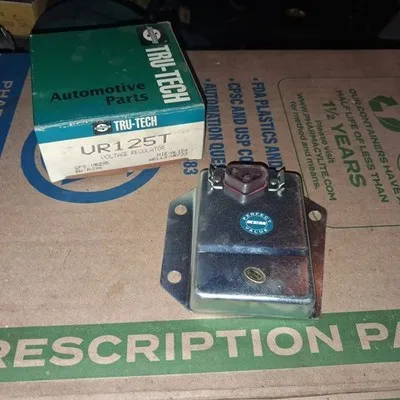
VR125T
Fits 1970-1974 Plymouth Barracuda · 1970 Plymouth Belvedere (2695 listed)
$33.99
View details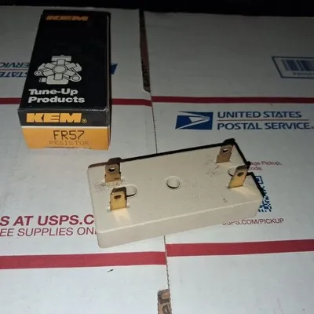
FR57
Fits 1980 Plymouth Arrow · 1972-1974 Plymouth Barracuda (2193 listed)
$18.99
View details
HR45
Fits 1986-1989 Plymouth Caravelle · 1992-1995 Plymouth Colt (1866 listed)
$22.99
View details
550K
Fits 1978-1983 Plymouth Horizon · 1978-1983 Dodge Omni (52 listed)
$17.99
View details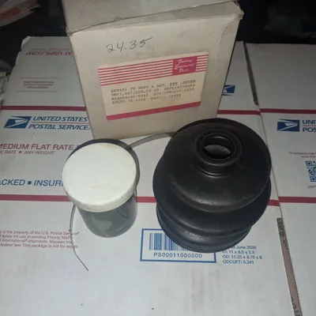
X9431
Fits 1978-1983 Plymouth Horizon · 1978-1983 Dodge Omni (52 listed)
$25.99
View details
W297X
Fits 1980 Plymouth Arrow · 1985 Plymouth Caravelle (229 listed)
$13.99
View details
W393X
Fits 1984-1990 Plymouth Colt · 1989-1991 Hyundai Sonata (115 listed)
$19.99
View details
1923X
Fits 1981-1985 Plymouth Reliant · 1981-1982 Plymouth TC3 (193 listed)
$23.99
View details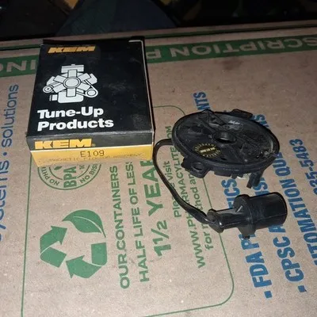
E109
Fits 1983-1985 Plymouth Caravelle · 1981-1986 Plymouth Horizon (238 listed)
$34.99
View details
W2035X
Fits 1987-1991 Plymouth Colt · 1987-1991 Dodge Colt (212 listed)
$12.99
View details
350-234
Fits 1993 Plymouth Acclaim · 1996-2000 Plymouth Breeze (2678 listed)
$27.99
View details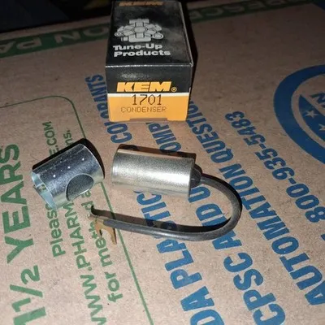
1701
Fits 1964-1972 Plymouth Barracuda · 1955-1971 Plymouth Belvedere (3000 listed)
$12.99
View details
1932X
Fits 1964-1974 Plymouth Barracuda · 1959-1970 Plymouth Belvedere (2303 listed)
$26.99
View details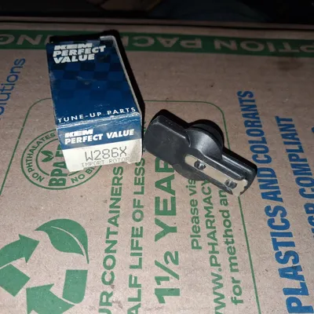
W286X
Fits 1976-1980 Plymouth Arrow · 1979-1982 Plymouth Champ (644 listed)
$31.99
View details
W3016X
Fits 1984-1991 Plymouth Colt · 1984-1990 Dodge Colt (320 listed)
$14.99
View details
TW3
Fits 1987-1989 Plymouth Expo · 1982-1989 Plymouth Horizon (90 listed)
$26.99
View details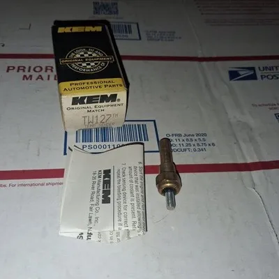
TW127
Fits 1989-1995 Plymouth Acclaim · 1988 Plymouth Caravelle (1541 listed)
$21.99
View details
E118
Fits 1989-1995 Plymouth Acclaim · 1986-1988 Plymouth Caravelle (1024 listed)
$50.99
View details
700135
Fits 1972-1977 Plymouth Gran Fury · 1965-1974 Plymouth Satellite (2467 listed)
$34.99
View details
BD61946
Fits 1990-1995 Plymouth Acclaim · 1985-1988 Plymouth Caravelle (986 listed)
$29.99
View details
2M-7179
Fits 1981-1983 Plymouth PB150 · 1981-1983 Plymouth PB250 (912 listed)
$29.99
View details
08541
Fits 1980-1984 Plymouth Horizon · 1976-1980 AMC Pacer (552 listed)
$14.99
View details
H1414-2
Fits 1969-1974 Plymouth Barracuda · 1962-1972 Plymouth Fury (2119 listed)
$12.99
View details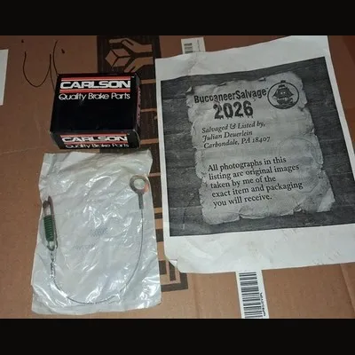
H2108
Fits 1980-1989 Plymouth Gran Fury · 1969-1974 Plymouth Barracuda (3000 listed)
$13.99
View details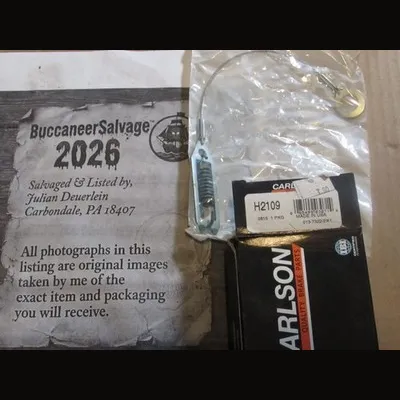
H2109
Fits 1969 Plymouth Barracuda · 1970-1976 Plymouth Duster (1427 listed)
$12.99
View details
H2545
Fits 1962-1968 Plymouth Belvedere · 1962-1969 Plymouth Fury (3000 listed)
$12.99
View details
H2658
Fits 1995-2001 Plymouth Neon · 1995-2002 Chrysler Neon (196 listed)
$18.99
View details
H2659
Fits 1995-2001 Plymouth Neon · 1995-2002 Chrysler Neon (196 listed)
$13.99
View details
H2664
Fits 1996-2000 Plymouth Grand Voyager · 1996-2000 Plymouth Voyager (519 listed)
$17.99
View details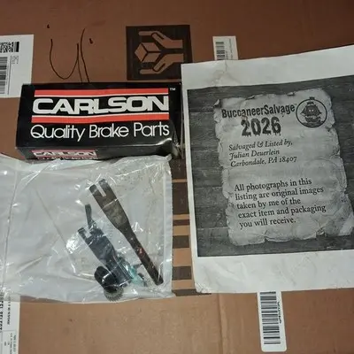
H2665
Fits 1996-2000 Plymouth Grand Voyager · 1996-2000 Plymouth Voyager (14 listed)
$14.99
View details
H4050-2
Fits 1962-1971 Plymouth Belvedere · 1962-1972 Plymouth Fury (1193 listed)
$14.99
View details
H2108
Fits 1979-1982 Plymouth Arrow Pickup · 1969-1974 Plymouth Barracuda (3000 listed)
$12.99
View details
H5064
Fits 1969-1974 Plymouth Barracuda · 1969-1971 Plymouth Belvedere (3000 listed)
$13.99
View details
H7249
Fits 1976 Plymouth Duster · 1975-1978 Plymouth Fury (1630 listed)
$12.99
View details
H7264
Fits 1989 Plymouth Acclaim · 1985-1988 Plymouth Caravelle (622 listed)
$12.99
View details
H7278
Fits 1990-1995 Plymouth Acclaim · 1991-1993 Chrysler Dynasty (231 listed)
$12.99
View details
H7301
Fits 1991-1995 Plymouth Acclaim · 1995-2001 Plymouth Neon (417 listed)
$22.99
View details
18009
Fits 1984-1995 Plymouth Voyager · 1988-1995 Plymouth Grand Voyager (303 listed)
$12.99
View details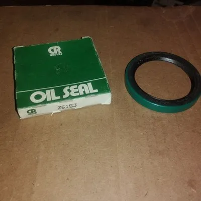
26153
Fits 1974-1977 Plymouth Trailduster · 1974-1983 Dodge Ramcharger (402 listed)
$22.99
View details
95017
Fits 1978-1983 Plymouth Horizon · 1978-1979 AMC Concord (316 listed)
$19.99
View details
31085
Fits 1989-1995 Plymouth Acclaim · 1980 Plymouth Arrow (3000 listed)
$17.99
View details
33268
Fits 1987-1994 Plymouth Sundance · 1984-1995 Plymouth Voyager (1581 listed)
$12.99
View details
33269
Fits 1983-1986 Plymouth Turismo · 1984-1995 Plymouth Voyager (172 listed)
$14.99
View details
33488
Fits 1976-1980 Plymouth Arrow · 1979-1982 Plymouth Arrow Pickup (1600 listed)
$26.99
View details
33489
Fits 1989-1995 Plymouth Acclaim · 1976-1980 Plymouth Arrow (1658 listed)
$25.99
View details
CH308HP
Fits 1970-1976 Plymouth Duster · 1964-1974 Plymouth Barracuda (410 listed)
$14.99
View details
CH459
Fits 1989-1995 Plymouth Acclaim · 1987-2000 Plymouth Voyager (160 listed)
$20.99
View details
CH526
Fits 1987-2000 Plymouth Voyager · 1988-1990 Chrysler Dynasty (410 listed)
$31.99
View details
CTS13
Fits 1985-1989 Plymouth Reliant · 1987-1991 Plymouth Sundance (395 listed)
$14.99
View details
V253
Fits 1989-1995 Plymouth Acclaim · 1987-1988 Plymouth Grand Voyager (586 listed)
$17.99
View details
VR-125
Fits 1970-1976 Plymouth Duster · 1970-1976 Plymouth Valiant (461 listed)
$24.99
View details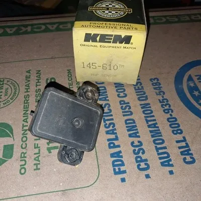
145-610
Fits 1991-1995 Plymouth Acclaim · 1992-2000 Plymouth Grand Voyager (749 listed)
$39.99
View details
AR180
Fits 1985-1987 Plymouth Caravelle · 1985-1986 Plymouth Horizon (662 listed)
$12.99
View details
AR218
Fits 1987-1989 Plymouth Caravelle · 1987-1992 Plymouth Colt (124 listed)
$19.99
View details
W297X
Fits 1980 Plymouth Arrow · 1985 Plymouth Caravelle (855 listed)
$27.99
View details
E567
Fits 1989-1995 Plymouth Acclaim · 1988-1995 Plymouth Grand Voyager (207 listed)
$44.99
View details
W377X
Fits 1981-1982 Plymouth Arrow Pickup · 1981-1982 Plymouth Champ (282 listed)
$14.99
View details
780413
Fits 1990-1995 Plymouth · 1990-1995 Chrysler (6 listed)
$28.99
View details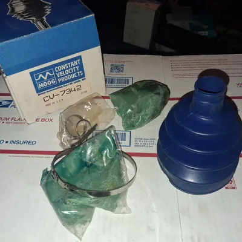
CV7342
Fits 1984-1987 Plymouth · 1984-1987 Chrysler (3 listed)
$19.99
View details
CV7406
Fits 1987-1995 Plymouth Voyager · 1989-1990 Plymouth Acclaim (601 listed)
$17.99
View details
3459
Fits 1989-1991 Plymouth Acclaim · 1980-1989 Plymouth Caravelle (535 listed)
$13.99
View details
3655
Fits 1989-1995 Plymouth Acclaim · 1984-1995 Plymouth Voyager (1559 listed)
$19.99
View details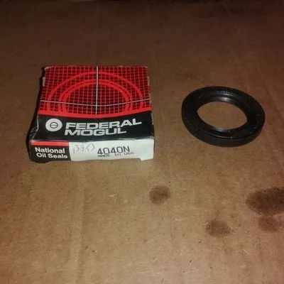
4040N
Fits 1984-1995 Plymouth Voyager (97 listed)
$13.99
View details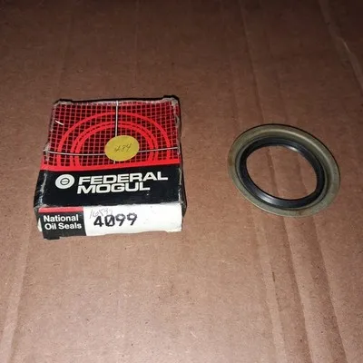
CR16593
Fits 1989-1995 Plymouth Acclaim · 1981-1989 Plymouth Reliant (622 listed)
$12.99
View details
4249
Fits 1984-1995 Plymouth Voyager · 1988-1995 Plymouth Grand Voyager (327 listed)
$12.99
View details
473468
Fits 1980 Plymouth PB100 · 1980 Plymouth PB200 (1542 listed)
$16.99
View details
475458
Fits 1974 Plymouth PB300 Van · 1975-1976 Dodge D200 (504 listed)
$17.99
View details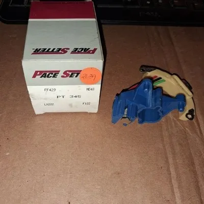
PT345
Fits 1981-1985 Plymouth Reliant · 1984-1987 Plymouth Voyager (506 listed)
$22.99
View details
31999
Fits 1984-1995 Plymouth Voyager · 1984-1995 Dodge Caravan (172 listed)
$17.99
View details
66-1191
Fits 1989-1992 Plymouth Colt · 1988-1991 Honda CRX (401 listed)
$29.99
View details
Motormite 03605
Fits 1978-1986 Plymouth Horizon · 1983-1986 Plymouth Reliant (175 listed)
$36.99
View details
CH-406
Fits 1983-1985 Plymouth Caravelle · 1981-1982 Plymouth Champ (267 listed)
$14.99
View details
CH409
Fits 1970-1976 Plymouth Duster · 1961-1975 Chrysler Imperial (771 listed)
$21.99
View details
CH410
Fits 1960-1976 Plymouth Valiant · 1960-1976 Dodge Dart (1093 listed)
$36.99
View details
JH-108
Fits 1984-1985 Plymouth Colt · 1985-1988 Mitsubishi Cordia (57 listed)
$26.99
View details
JH-67
Fits 1984 Plymouth Colt · 1984 Dodge Colt (102 listed)
$23.99
View details
JR-103
Fits 1987-1991 Plymouth Colt · 1987-1991 Dodge Colt (142 listed)
$17.99
View details
JR-109
Fits 1992-1994 Plymouth Colt · 1990-1994 Plymouth Laser (84 listed)
$12.99
View details
LX-109
Fits 1978-1989 Plymouth Caravelle · 1976 Plymouth Duster (690 listed)
$28.99
View details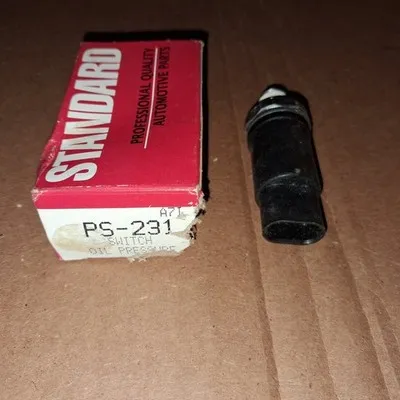
PS-231
Fits 1989-1995 Plymouth Voyager · 1989-1996 Dodge Dakota (409 listed)
$19.99
View details
PS205
Fits 1984-1988 Plymouth Caravelle · 1987-1988 Plymouth Expo (616 listed)
$30.99
View details
US-94
Fits 1978-1983 Plymouth Horizon · 1978-1986 Dodge Charger (68 listed)
$39.99
View details
V231
Fits 1990-1994 Plymouth Laser · 1983-1989 Dodge Ram 50 (192 listed)
$17.99
View details
V253
Fits 1986-1989 Plymouth Reliant · 1986-1995 Plymouth Voyager (329 listed)
$15.99
View details
CH310T
Fits 1989-1994 Plymouth Acclaim · 1990-1991 Chrysler TC Maserati (270 listed)
$14.99
View details
UR125T
Fits 1970-1974 Plymouth Barracuda · 1970-1976 Plymouth Duster (1426 listed)
$32.99
View details
F7275
Fits 1984-1988 Plymouth Caravelle · 1984-1986 Chrysler Laser (187 listed)
$19.99
View details
JV524
Fits 1981-1989 Plymouth Reliant · 1982-1994 Chrysler LeBaron (358 listed)
$22.99
View details
JV980
Fits 1981-1988 Plymouth Horizon · 1981-1988 Plymouth Reliant (335 listed)
$15.99
View details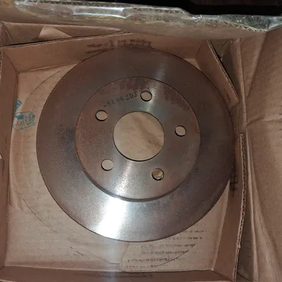
BD61961
Fits 1985-1989 Plymouth Reliant · 1987-1989 Plymouth Sundance (163 listed)
$34.99
View details
C838
Fits 1989-1990 Plymouth Acclaim · 1979-1989 Plymouth Caravelle (870 listed)
$29.99
View details
3I1183
Fits 1981-1988 Plymouth Caravelle · 1978 Plymouth Fury (552 listed)
$12.99
View details
33087
Fits 1976-1980 Plymouth Arrow · 1979-1982 Plymouth Champ (311 listed)
$13.99
View details
33323
Fits 1989-1994 Plymouth Acclaim · 1987-1989 Plymouth Caravelle (24 listed)
$12.99
View details
33463
Fits 1985-1987 Plymouth · 1985-1987 Chrysler (6 listed)
$15.99
View details
33470
Fits 1987-1988 Plymouth Colt · 1987-1988 Dodge Colt (56 listed)
$21.99
View details
33490
Fits 1982-1985 Plymouth Reliant · 1982-1985 Chrysler LeBaron (185 listed)
$17.99
View details
33502
Fits 1991-1995 Plymouth Colt · 1990-1994 Plymouth Laser (399 listed)
$19.99
View details